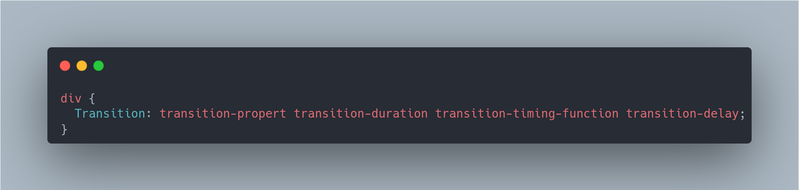
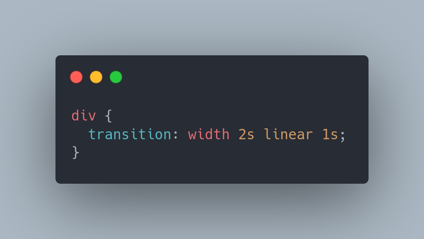
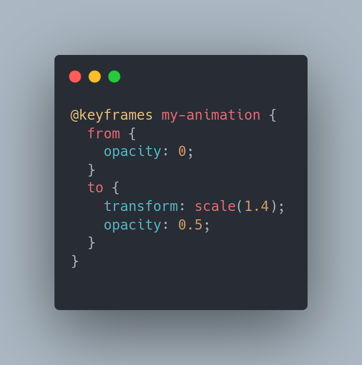
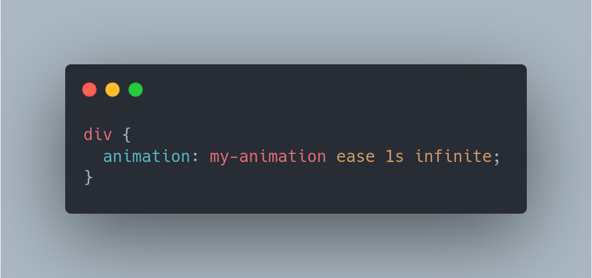
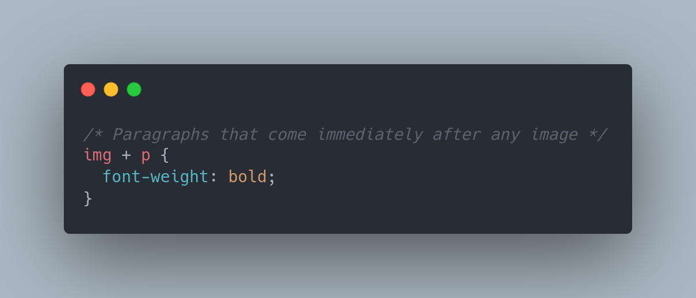
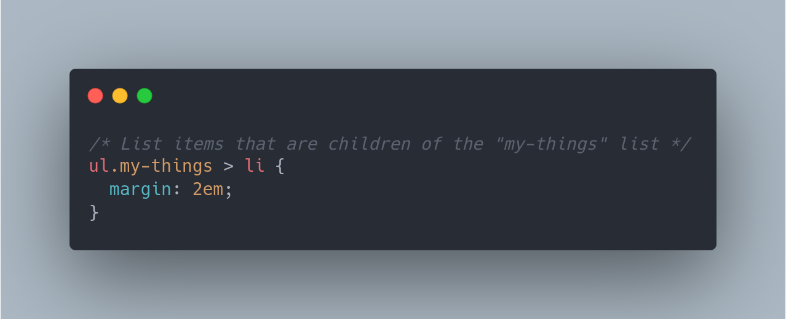
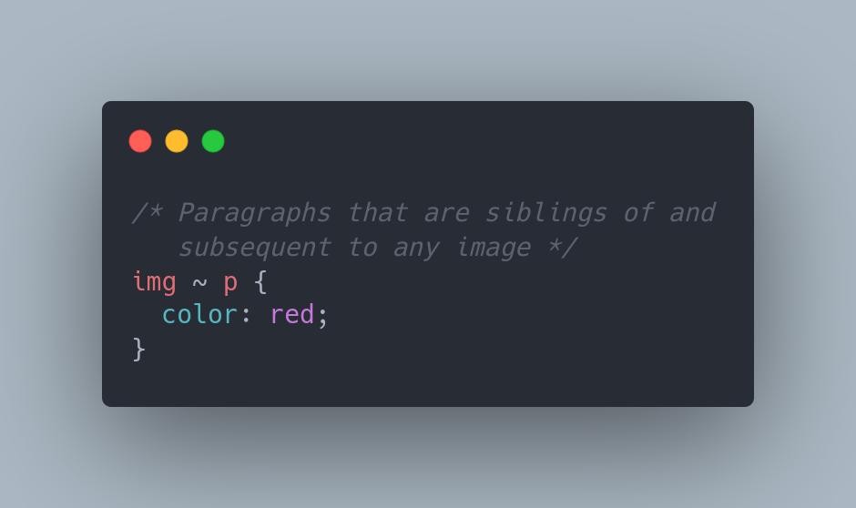
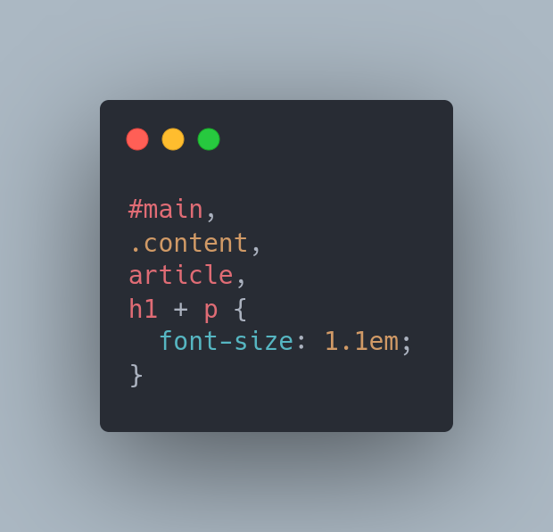

Day 7: Tìm hiểu về css transition, css animation, css transform
Một số css seclector; Một số tool
cần thiết
I. Tìm hiểu về css transform
-
Tác dụng
Thuộc tính CSS biến đổi cho phép bạn dịch chuyển, xoay, chia tỷ lệ, nghiêng hoặc dịch một phần tử. Nó sửa đổi không gian tọa độ của mô hình định dạng trực quan CSS
-
Các giá trị cơ bản
TranslateRotateScaleMatrix
Hover me to transform rotate
-
Transform-origin
Dùng để thay đổi tâm của tọa độ khi thực hiện transform một đối tượng
II. Tìm hiểu về css transition
- Tác dụng thay đổi thuộc tính CSS trong một thời gian nhất định
-
Các thành phần
transitiontransition-delaytransition-durationtransition-propertytransition-timing-function
-
Cách sử dụng
Ex
Hover me to see transition
III. Tìm hiểu về css animation
-
Tác dụng
Tạo ra các hiệu ứng hoạt cảnh
-
Để tạo ra aimation cần gán cơ chế hoạt động cho nó, bằng cách sử dụng
@keyframes
-
Các giá trị cơ bản
animation-nameanimation-durationanimation-delayanimation-iteration-countanimation-directionanimation-timing-functionanimation-fill-mode
Animation
IV. CSS selector
-
Attribute selectors
-
Class selectors
-
ID selectors
-
Type selectors
-
Universal selectors
-
Chị em liền kề
 -
Phần tử con trực tiếp
 -
Các phần tử theo sau một phần tử
 -
Bộ chọn kiểu danh sách

-
V. Một số tool cần thiết
- Smart Page ruller Extension: dùng để đo kích thước của container
- Perfectpixel chrome extension: Để so sánh trực tiếp bản thiết kế với giao diện web đang code
- Mobile simulator: Dùng trong responsive Web
- Color Picket: Dùng để lấy các mã mầu của đối tượng